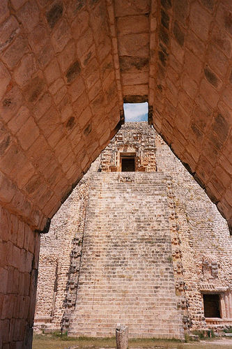
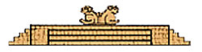
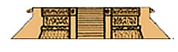
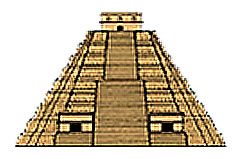
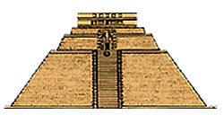
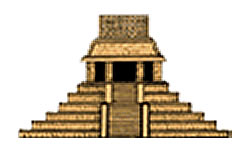

Arquitectura Maya 
La planificación de los centros ceremoniales mayas siguió la topografía (condiciones y características del terreno) donde se construyeron, lo que determinó las diferentes formas y estructuras de los edificios. La arquitectura maya compartió características generales de las culturas americanas, pero tuvo modalidades especiales. Por ejemplo, de propio estilo maya son el arco falso, bóveda maya, cresterías, estelas y altares. En la arquitectura maya se produjeron varios estilos arquitectónicos como el estilo Petén en Uxmal, el estilo Usumacinta en Palenque, el estilo Puuc en Uxmal, entre otros. Una contribución muy valiosa de la cultura maya fue la pintura mural integrada a la arquitectura. La cultura maya produjo una arquitectura monumental, de la que se conservan grandes ruinas en Palenque, Uxmal, Tikal, Quiriguá, Tajín, y Copán, entre otros.
Tipo y elementos de la arquitectura Maya
Plataformas ceremoniales
Las plataformas ceremoniales son estructuras de poca altura (máximo cuatro metros) que tenían figuras labradas en los lados. Las plataformas se usaban para celebrar ceremonias públicas, por lo cual en la parte superior había altares, banderas, incensarios y, a veces, un tzompantli: hilera de varas con cráneos ensartados.
Uxmal, México 
Chichén Itza, México 
Pirámides
Las pirámides se construyeron con la superposición de varias plataformas, sin nunca culminar en un volumen geométrico realmente piramidal. Las plataformas sirven de base para el templo, acercándolo lo más posible al cielo. Las pirámides también tenían una función funeraria, aunque era de importancia secundaria.
Los mayas solían ampliar sus edificios cada determinado tiempo. Muchas pirámides fueron hechas sobre construcciones anteriores, a las que se dejó tal cual en el interior de las nuevas. Las pirámides se componen de bases escalonadas (en muchos casos nueve) y una escalinata central que comunica con un templo en la plataforma superior.
Coba, México 
Uxmal, México 
Palenque, México 
Templo
El templo es el espacio donde se hacían rituales para los dioses. Los templos están sobre las pirámides y tienen muchas decoraciones en su parte exterior. El templo es de planta cuadrangular, paredes verticales, con una, tres o cinco entradas. Las entradas dirigen a otras piezas, algunas directamente, o por un pórtico, cuando hay varias puertas. Las entradas se cerraban mediante cortinas amarradas en el interior a unas argollas empotradas, tres en cada lado de la entrada. Los templos no tenían ventanas, pero en algunos casos tenían huecos en forma rectangular o imitando el signo IK, que significa aire. El espacio interior del templo varía mucho desde los pequeños santuarios del Petén hasta los más grandes de Palenque.
Palacios
Los palacios son edificios que tienen muros lisos, con frisos decorados. Los palacios tenían muchas cámaras interiores que servían como habiaciones para la clase gobernante. Estos palacios se construían solos o en grupo. La construcción de palacios era generalmente en el interior de centros ceremoniales y se construían sobre plataformas.
Bóveda maya
La bóveda maya también se ha denominado como falsa, salediza o simplemente maya. Este tipo de bóveda se construía acercando los muros a partir de cierta altura (inmediatamente encima de la parte superior del hueco de las puertas), superponiendo las